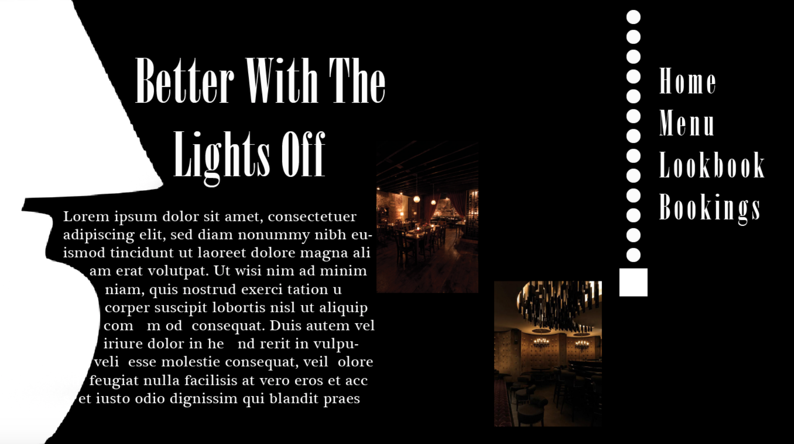
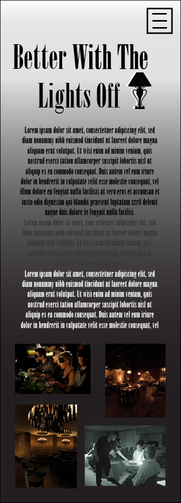

John's Desktop VS. Mobile.
practice (optionl) task.
final task.
For my website I could add a few interactions and animations such as making the lamp cord on the right clickable and it would allow the site to change from day to night layouts. I would also add photo albums rather than upload all images on the site for organization and minimalism. Overall I would try to keep items off the home page to display a very sophiticated and clean look.
 